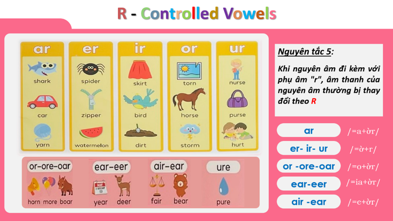
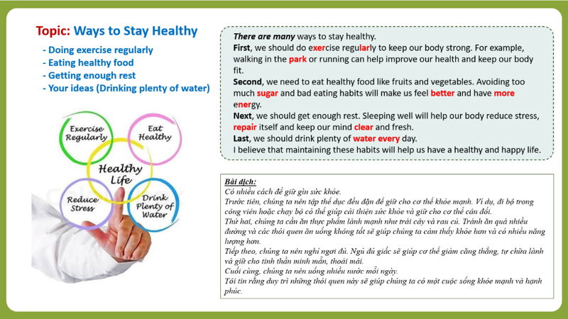

📘 A5 – CÁC QUY TẮC ĐẶC BIỆT TRONG PHÁT ÂM (4)
A. QUY TẮC PHÁT ÂM NGUYÊN ÂM + R
1. QUY TẮC 6 – ÂM + R (Long Vowel Sound)
👉 Khi nguyên âm đi kèm với phụ âm R, âm của nguyên âm thường thay đổi.

| Pattern | Sound | Examples & Thu âm |
|---|---|---|
| AR | /ɑːr/ |
🔊 shark
🔊 car
🔊 yarn
|
| ER – IR – UR | /ɜːr/ |
🔊 spider
🔊 zipper
🔊 bird
🔊 skirt
🔊 nurse
🔊 purse
|
| OR – ORE – OAR | /ɔːr/ |
🔊 horn
🔊 more
🔊 boar
🔊 torn
🔊 horse
🔊 storm
|
| EAR – EER | /ɪə(r)/ |
🔊 year
🔊 deer
|
| AIR – EAR | /eə(r)/ |
🔊 fair
🔊 bear
|
| URE | /jʊə(r)/ |
🔊 pure
|
🎧 LUYỆN TẬP PHÁT ÂM & SHADOWING

📖 Topic: Ways to Stay Healthy
- Doing exercise regularly
- Eating healthy food
- Getting enough rest
- Your ideas (Drinking plenty of water)
| 🇬🇧 English | 🇻🇳 Tiếng Việt |
|---|---|
|
There are many ways to stay healthy. First, we should do 🔊 exercise regularly
to keep our body strong. For example, walking in the
🔊 park
or running can help improve our health and keep our body fit.
Second, we need to eat healthy food like fruits and vegetables. Avoiding too much 🔊 sugar
and bad eating habits will make us feel
🔊 better
and have more
🔊 energy .
Next, we should get enough rest. Sleeping well will help our body reduce stress, repair itself and keep our mind clear and fresh. Last, we should drink plenty of 🔊 water
every day.
I believe that maintaining these habits will help us have a healthy and happy life. |
Có nhiều cách để giữ gìn sức khỏe. Trước tiên, chúng ta nên tập thể dục đều đặn để cơ thể khỏe mạnh. Ví dụ đi bộ trong công viên hoặc chạy bộ có thể giúp cải thiện sức khỏe và giữ cơ thể cân đối. Thứ hai, chúng ta nên ăn thực phẩm lành mạnh như trái cây và rau củ. Tránh ăn quá nhiều đường và thói quen ăn uống không tốt sẽ giúp chúng ta cảm thấy khỏe hơn và có nhiều năng lượng hơn. Tiếp theo, chúng ta nên nghỉ ngơi đầy đủ. Ngủ đủ giấc sẽ giúp cơ thể giảm căng thẳng, tự chữa lành và giữ cho tinh thần minh mẫn, thoải mái. Cuối cùng, chúng ta nên uống nhiều nước mỗi ngày. Tôi tin rằng duy trì những thói quen này sẽ giúp chúng ta có một cuộc sống khỏe mạnh và hạnh phúc. |
🤖 AI Chatbot – Kiểm Tra Phát Âm Tự Động (Ways to Stay Healthy)
Đọc từng câu dưới đây để AI kiểm tra. AI sẽ tự động chấm điểm và hỗ trợ bạn vượt qua tất cả các câu để Mở khóa trang Phonics A6!
💡 Shadowing Tips
- Nghe toàn bộ đoạn văn.
- Đọc theo từng câu và nhìn cột tiếng Việt.
- Quan sát cột tiếng Việt để hiểu nghĩa.
- Lặp lại 3–5 lần cho đến khi nói trôi chảy.
- Che cột tiếng Việt và nói lại toàn bộ đoạn.